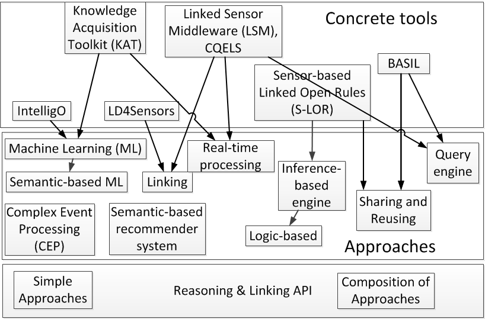

<h1>Reasoning Architecture</h1>


<div class="hero-unit">

<ul>
<center>Explanations of the picture below can be found in: </center>
<li>
<a href="http://www.eurecom.fr/fr/publication/5144/download/comsys-publi-5144.pdf">Sensor-based Linked Open Rules (S-LOR): An Automated Rule Discovery Approach for IoT Applications and its use in Smart Cities
</a></li>
<li>
Book Chapter: <a href="https://www.riverpublishers.com/pdf/ebook/chapter/RP_9788793519046C6.pdf">A Review of Tools for IoT Semantics and Data Streaming Analytics</a>
published within the book: The Building Blocks of IoT Analytics - Internet-of-Things Analytics</a><br/>
<br/><br/>

</li>
</ul>
<center>



		</center>
</div>
